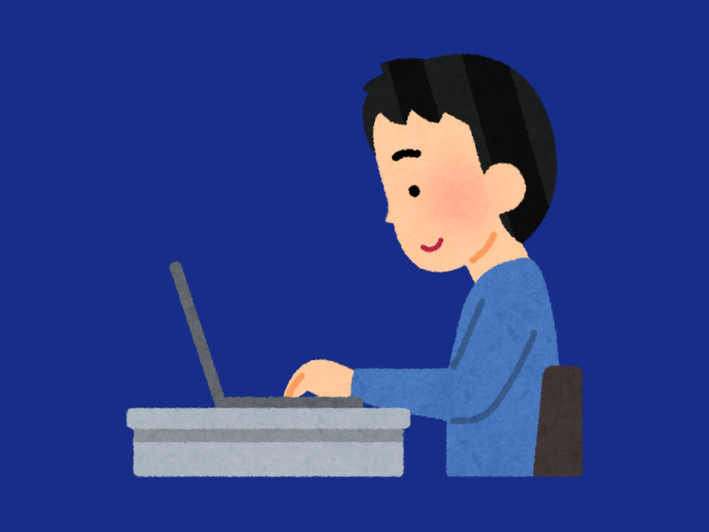
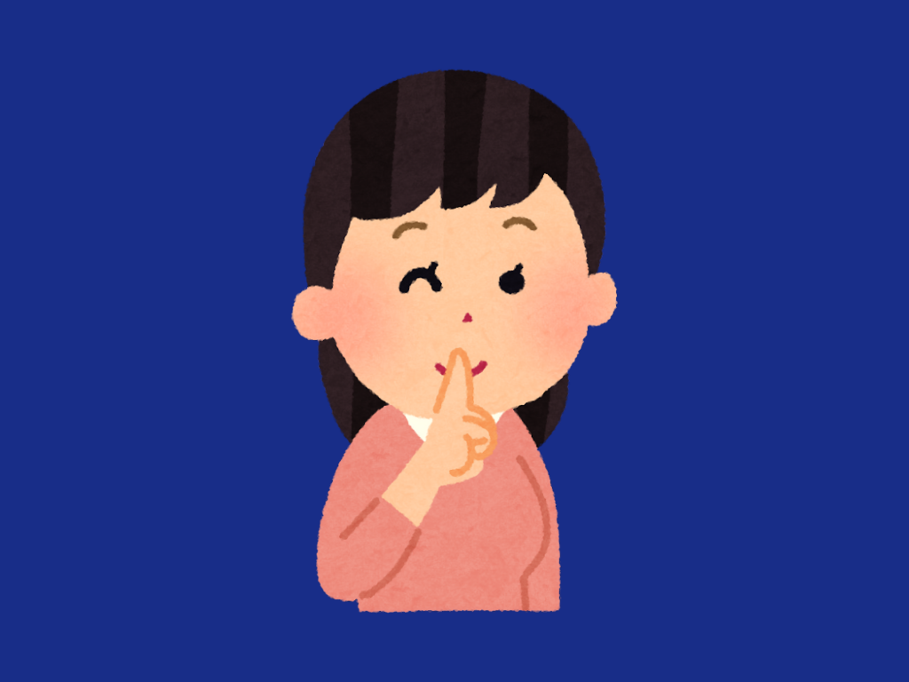

The term ‘Netiquette’ came from the words ‘net’ which is short for internet and ‘etiquette’ which pertains to the set of rules that commands the accepted behavior a person must have in certain situations. Combining these terms together, ‘netiquette’ is a set of rules a person must display on the internet. They consist of rules and commands that aim to ensure safety and peace in the world of the Internet. While these rules are not legally binding, it is expected for internet users to demonstrate these acts.
Netiquettes are important because it promotes respectful and responsible online communication. It helps prevent misunderstandings, cyberbullying, and security risks whilst ensuring a positive digital experience. Good netiquette also improves professionalism, and online reputation. By following netiquettes, people can communicate more effectively and have better digital interactions.
|  |
1. Remember the Human.You need to remember that you are talking to a real person when you are online. When you are interacting online, be careful with what you are going to say to other people, and consider what you would feel when another person said something to you that they cannot take back. |
|  |
2. Adhere to the same standards online that you follow in real life.You need to behave the same way online that you do in real life. People tend to be fairly behaving in real life, thus this kind of behaviour should be applicable to online as well—as to how, the network isn’t far off different from the real world. Do not act any different to someone you talk online than what you would be like with someone in person. Remember that each and every person online deserves to be talked out nicely, so be ethical and do not ever break the law—within the online platforms or even in real life. |
3. Know where you are in Cyberspace.Always take a look around when you enter a new domain when surfing the web. When entering a new specific place on the website, you should always consider being safe and having to take a look around. Lurk before you Leap they say. The internet has tons of corners where we would possibly undergo, it’s always important to know where you are and where you stand. |
|
4. Respect other people's time and bandwith.Remember people have other things to do besides read your email. you are not the center of the world. Keep messages concise and relevant to avoid wasting others’ time. Avoid unnecessary emails, long posts, or large attachments unless needed. Stay on-topic in discussions to keep communication efficient and productive. |
|
 |
5. Make yourself Look Good online.Be polite and pleasant to everyone. Be polite, respectful, and professional in all online interactions. Use proper grammar and tone to avoid misunderstandings. Avoid rude comments or trolling, as your online presence reflects your reputation. |
 |
6. Share Expert knowledge.Ask questions online, share what you know online. Help others by sharing valuable insights and answering questions. Engage in meaningful discussions and don’t hesitate to ask for help when needed. Contributing knowledge builds a stronger, more supportive online community. |
 |
7. Help keep flame wars under control.Netiquette does not forgive flaming It means avoiding online arguments or staying calm and be respectful during heated discussions, helping to keep the conversation civil instead of letting it turn into an aggressive argument. It's about fostering a positive environment online where different opinions are respected, and anger doesn’t take over the conversation./p> |
 |
8. Respect other people's privacy.Do not read other people's mail without their permission. Be considerate of others personal space online. Do not share personal information about others without their permission and keep their private details safe online. Everyone deserves to have their private information kept safe, and respecting that helps keep the online world safer and more respectful for everyone. |
 |
9. Don't abuse your power.If you are in a position of high value, importance, or possess greater intellect than your peers, do not abuse your power for selfish gain or withhold knowledge from those who need it. Leverage your fame or online presence to advocate for those whose voices are often ignored and to share information that is not easily accessible. Act as a conduit for useful information and advice, empowering others through knowledge sharing. |
 |
10. Be forgiving of other people's mistakes.Remember that there is a person behind the screen which means online communication are prone to errors, like typos or unclear wording. Instead of reacting negatively, strive to understand the intended message. If correction is needed, offer constructive feedback and education rather than harsh criticism. This creates a more positive and supportive online environment. |
If you follow the netiquette rules outlined above, you will have no trouble communicating online in everyday life, school, or at work. Your colleagues and superiors will also appreciate your respectful and friendly behavior.